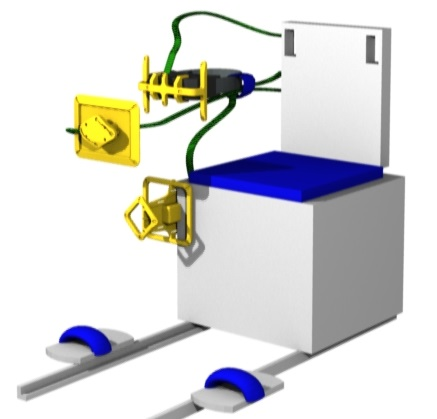

Objects Pre-Positioning
Place the objects as shown to prepare for experiment execution:
Replace the Cushion on the GRIP Chair.
Temp stow the Virtual Reality Headset, the Hand Marker Support and the Chest Marker Support to the right side of the GRIP Chair (subject''s right side when seated facing the Tracking Cameras).

Press 'Next' to continue.